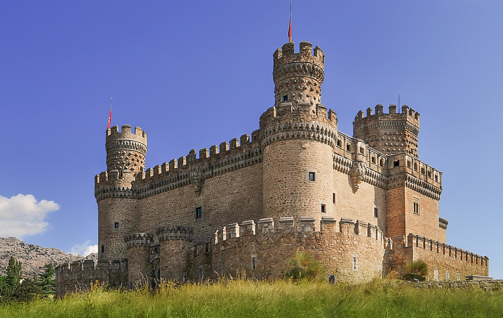

üìç Alternative Itinerary Available: View Segovia + Sierra de Guadarrama Combined Day Trip →
üèîÔ∏è SIERRA DE GUADARRAMA DAY TRIP
Saturday, November 15th - Nature & Scenic Views Tour
Perfect for Mixed Ages - Easy Walking Only!
üó∫Ô∏è Full Route Map
9:00 AM - Depart Hotel üè®
- Pick up rental car at Leonardo City Center Madrid
- Drive time to first stop: ~50 minutes
- Remember: Bring warm clothes for mountain weather!
10:00 AM - Manzanares El Real Castle üè∞

⚠️ IMPORTANT UPDATE: The castle is currently CLOSED to the public (as of January 2025). It returned to private owners and interior visits are not available.
What to expect:
- Stunning exterior views - perfect for photos with mountain backdrop
- Walk around Santillana Lake with castle views
- Visit Church of Nuestra Señora de las Nieves (15th century)
- Charming medieval town to explore
- NO entrance fee (exterior only)
Duration: 30-45 minutes (exterior viewing only)
11:30 AM - Mirador de Quebrantaherraduras üì∏
 Quick photo stop:
Quick photo stop:
- Spectacular views of La Pedriza granite formations
- One of Europe's largest granite landscapes
- Only 100m walk from parking
Duration: 15 minutes
12:00 PM - Puerto de Navacerrada üèîÔ∏è
 Scenic mountain drive:
Scenic mountain drive:
- Drive through famous mountain pass (1,773m elevation)
- Optional coffee stop at mountain café
- Snow-capped peaks visible (weather permitting)
⚠️ Important: May need snow chains in November!
12:45 PM - Rascafr√≠a Village üèòÔ∏è
 Lunch break:
Lunch break:
- Traditional Spanish mountain village
- Multiple restaurant options
- Recommended: Local specialties like cochinillo (roast pig)
Duration: 1.5 hours for relaxed lunch
2:30 PM - Mirador de Los Robledos ⭐ BEST VIEW!
 BEST VIEWPOINT OF THE DAY!
BEST VIEWPOINT OF THE DAY!
- Panoramic views of El Paular valley
- Mountains and forests as far as the eye can see
- Dedicated parking area
- Perfect for group photos
Duration: 20-30 minutes
3:15 PM - Puerto de Cotos - La Gitana Viewpoint üåÑ
Multiple viewpoints in one stop:
- La Gitana viewpoint with sundial
- Orientation guide to identify peaks
- El Príncipe viewpoint nearby
- Easy 5-minute walk from parking
Duration: 30 minutes
4:00 PM - Optional: Embalse de Navacerrada üíß
If time permits:
- Beautiful reservoir surrounded by mountains
- Multiple photo stops along the shore
- Bird watching opportunities
- Or skip if tired and head back
5:00-5:30 PM - Return to Madrid üåÜ
- Scenic drive back before sunset
- Arrive at hotel by 5:30 PM
- Total driving: ~180 km round trip
üìç GPS COORDINATES FOR YOUR NAVIGATION:
1. Manzanares El Real Castle: Calle Cañada s/n, 28410 Manzanares El Real
2. Puerto de Navacerrada: M-601, 28470 Cercedilla
3. Rascafría: Plaza de la Villa, 28740 Rascafría
4. Mirador de Los Robledos: M-604 km 27, Rascafría
5. Puerto de Cotos: M-604, Puerto de Cotos
6. Embalse de Navacerrada: Carretera M-607, Navacerrada
üìã IMPORTANT REMINDERS:
What to Bring:
- Warm clothing (jacket, fleece, gloves)
- Comfortable walking shoes (no hiking required!)
- Camera for amazing photos
- Cash for castle entrance (€5 per person)
- Snacks & water
- Sunscreen & sunglasses
Weather Considerations:
- November temperatures: 5-10°C in mountains
- Possible snow at higher elevations
- IMPORTANT: Check weather forecast morning of trip
- Consider snow chains or ensure rental car has winter tires
Key Features:
- NO HIKING - All stops accessible by car/short walks
- Suitable for ages 20s-50s
- Flexible timing - can skip stops if needed
- Beautiful scenery without physical effort
- Mix of culture (castle) and nature (viewpoints)
üìû Emergency Contacts:
- üè∞ Castle info: +34 91 853 00 08
- üö® Emergency services: 112
- üè® Your hotel: Leonardo City Center Madrid
Have a wonderful trip! üéâ
This itinerary offers the best of Sierra de Guadarrama's beauty
without any strenuous activity - perfect for your mixed-age group!
This itinerary offers the best of Sierra de Guadarrama's beauty
without any strenuous activity - perfect for your mixed-age group!